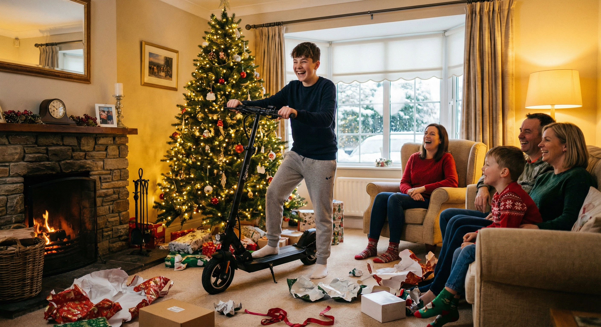
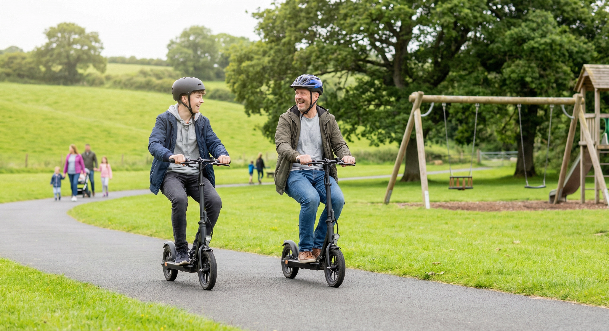
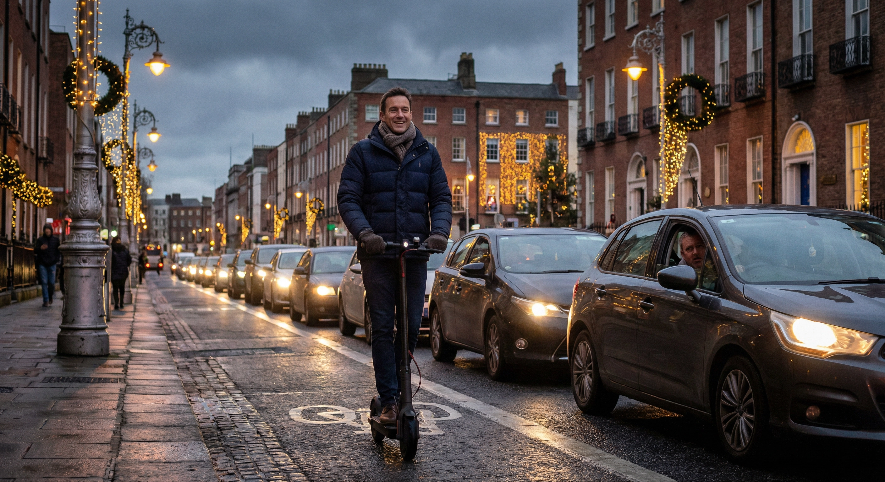
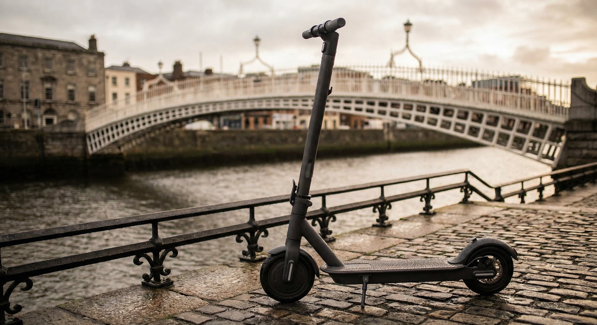

Surprise your loved ones with an electric scooter they'll ride all year round. Sustainable, thrilling, and perfect for getting around Ireland.
See Our Top Picks

Few gifts deliver that spark of excitement quite like unwrapping an electric scooter on Christmas morning. Whether it's for a teenager eager to explore or a partner tired of Dublin traffic, it's the kind of present people never forget.
Ireland's cities are more connected than ever with dedicated cycling lanes, coastal greenways, and pedestrian-friendly routes. An e-scooter fits perfectly into this changing landscape — no circling for parking, no waiting for the Luas.


E-scooters produce zero emissions and cost just cents per charge. Every ride replaces a short car journey that would otherwise clog up our roads and add to air pollution.
With fuel costs still high and Irish winters leaning milder each year, there's never been a better time to go electric. Giving an e-scooter says you care about the person and the planet.

At Green Wheels Scooters we've helped hundreds of Irish families find the right scooter at the right price. Every model comes with a full warranty, free delivery, and the backing of our Dublin service centre.
When you hand over that box on Christmas Day, you're giving peace of mind alongside the excitement. Order by 20th December for guaranteed arrival.
Three models covering every budget and riding style — from a premium long-range cruiser to an affordable everyday runabout. Each ships free across Ireland with a full 1-year warranty.


Powerful Motor • 80km Range • Premium Build • Long-Distance Ready

350W Motor • 18–25km Range • 31km/h Top Speed • 8.5" Solid Tires

The daily commuter: The G2 Pro's 58km range and 50km/h top speed handle any city commute with battery to spare. It's the sweet spot between power and value.
The long-distance rider: The G2 Max delivers an incredible 80km on a single charge — enough to get from Dublin to Bray and back. Premium build for serious riders.
The first-timer or student: At just €250, the Aovopro ES80 is an unbeatable stocking filler. Puncture-proof tyres, compact fold, and nippy enough for city streets.
Browse our full range of electric scooters or get in touch for personalised advice. We're here to help you find the perfect gift.
Shop Now Contact Us